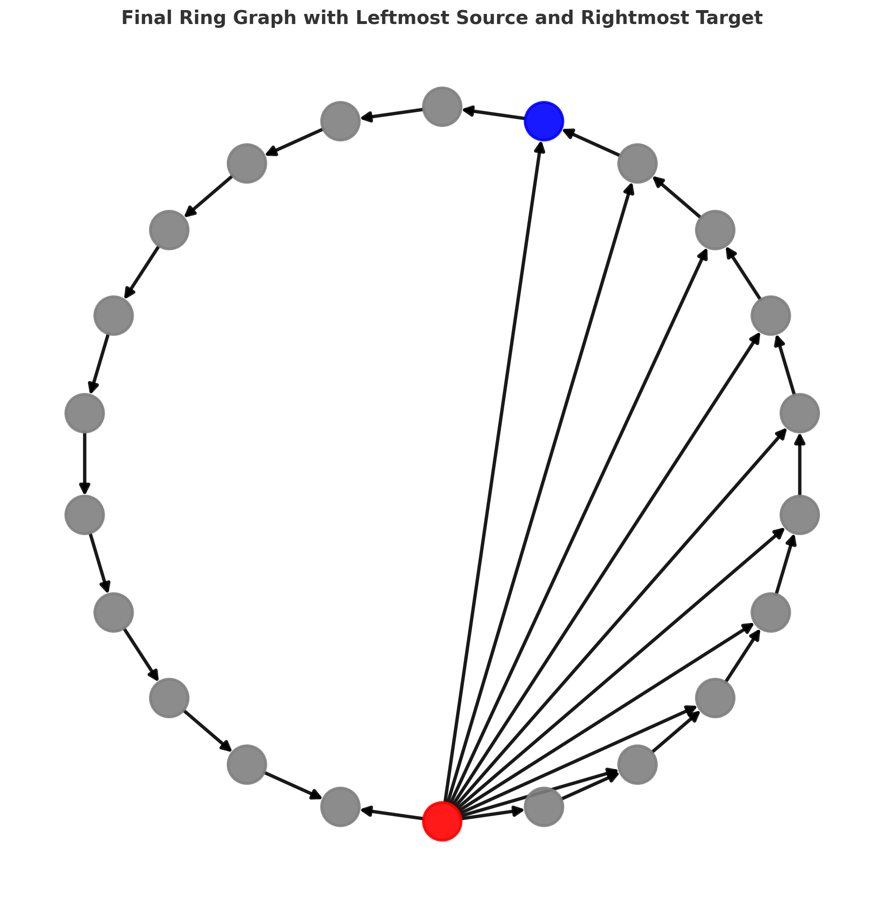

Yonatan Sverdlov
PhD Student | Technion – Israel Institute of Technology
yonatans@campus.technion.ac.il |
GitHub |
Google Scholar
 |
I am a PhD student under Prof. Nadav Dym. My research focuses on Graph Neural Networks (GNNs), representation-based learning, and geometric aspects such as over-squashing, continuity, and Lipschitz stability. |
Publications
 |
Monotone and Separable Set Functions: Characterizations and Neural Models Yonatan Sverdlov, Nadav Dym Neural Information Processing Systems (NeurIPS 2025) [Paper] | [Code] | [BibTeX] |

|
Short-Range Oversquashing in Graph Neural Networks Yaaqov Mishayev, Yonatan Sverdlov, Tal Amir, Nadav Dym Oral – Learning on Graphs Conference (LOG 2025) [Paper] | [Code] |
|  |
FSW-GNN: A Bi-Lipschitz WL-Equivalent Graph Neural Network Yonatan Sverdlov, Yair Davidson, Nadav Dym, Tal Amir Learning on Graphs Conference (LOG 2025) [Paper] | [Code] | [BibTeX] |
 |
On the Expressive Power of Sparse Geometric MPNNs Yonatan Sverdlov, Nadav Dym International Conference on Learning Representations (ICLR 2025) [Paper] | [Code] | [BibTeX] |
 |
Revisiting Multi-Permutation Equivariance through the Lens of Irreducible Representations Yonatan Sverdlov, Ido Springer, Nadav Dym International Conference on Learning Representations (ICLR 2025) [Paper] | [Code] | [BibTeX] |